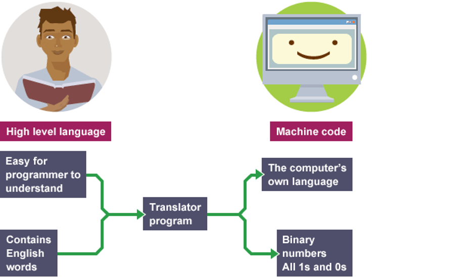
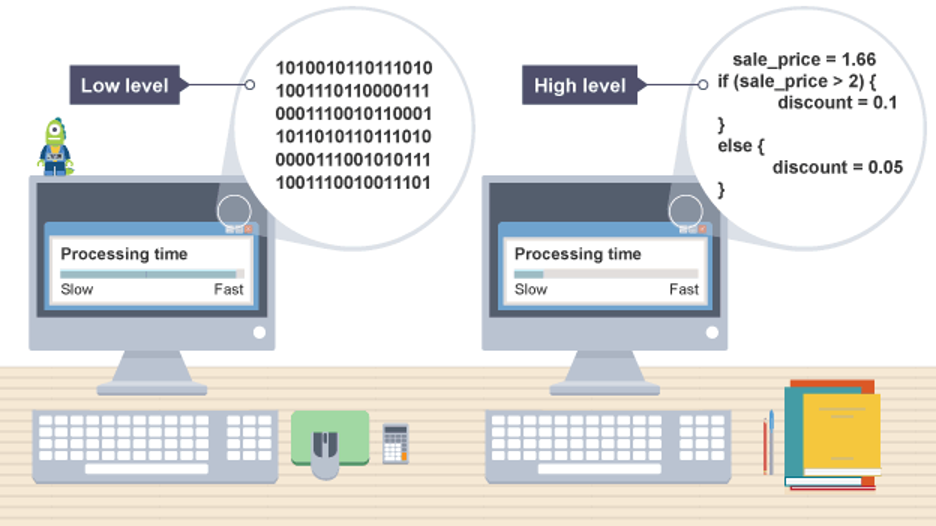
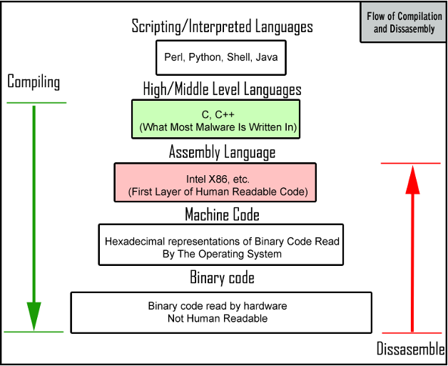
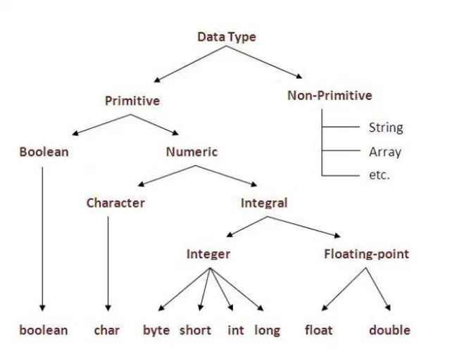
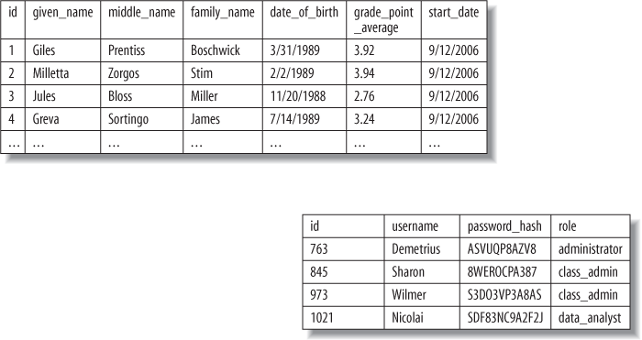
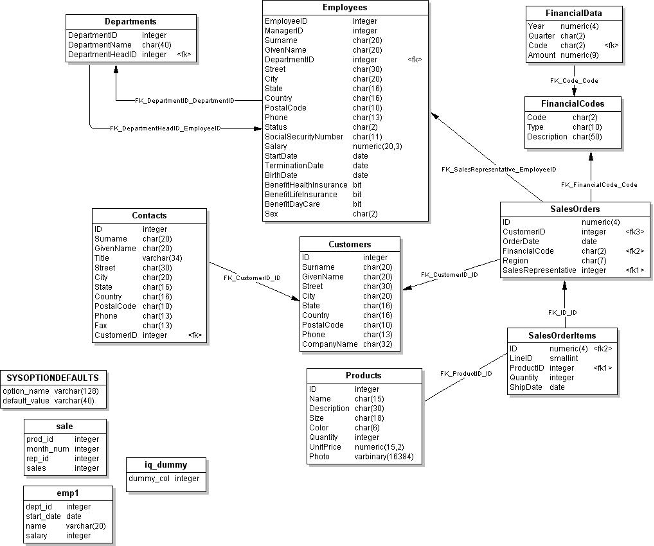
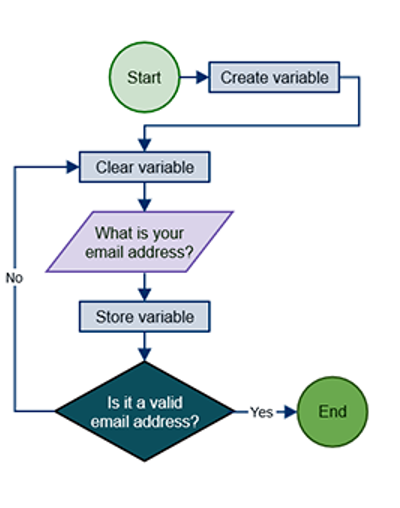
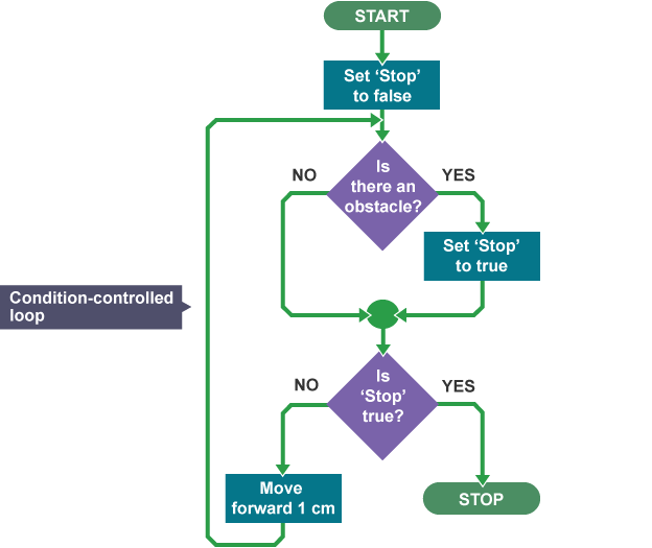

Programmeringsparadigmer og algoritmer
2026-09-29
Skal vi stadig kode? (…om AI og kode)
Systemet er/som lag (Kernighan kapitel 6)
Workshop (I får en bestilling på et “IT system” fra mig)
At designe en funktion (Downey kapitel 4, 5 og 6)
Paradigmer (… den samme opgave løst på tre måder)
Workshop øvelse
I skriver ikke færdig kode i dag. I skriver grænseflader, altså hvad hver funktion skal hedder, hvad den får ind, og hvad den giver tilbage.
| Kapitel | Bruges til |
|---|---|
| Downey kp. 4: Functions and Interfaces | Grænseflade mod implementation, docstrings, præ- og postbetingelser, udviklingsplanen |
| Downey kp. 5: Conditionals and Recursion | Booleske udtryk, kædede betingelser, rekursion og base case |
| Downey kp. 6: Return Values | return mod print, rene funktioner, inkrementel udvikling, validering af input |
| Kernighan kp. 6: Software Systems | Systemer som lag, styresystem, filsystem, grænseflader |
| Kernighan kp. 7: Learning to Program | Hvorfor man skal kunne læse kode, også når man ikke skriver den selv |
Forestil jer, at vi har bygget et system med prompts. Vi har forbedret det lidt ad gangen, prompt for prompt, indtil det virkede.
> lav et system der ...
> tilføj X ...
> tilføj y ...
> osv ...Det kører. Vi bruger det i et par år. Så opstår der et nyt behov.
Kan vi vende tilbage til koden og tilføje det, uden at kunne kode?
Kan vi overhovedet genskabe systemet 1:1 … selv hvis vi i et øjeblik af klarsyn gemte alle vores prompts?
Min personlige og for nuværende erfaring siger nej. Men hvad tænker I?
Jeg ville ikke oversætte en tekst til kinesisk (med AI) og derefter helt ukritisk sende den til udgivelse i Kina.
Tænk på, hvad Words stavekontrol har gjort for skrivefærdigheder.
Det er ikke et argument mod at bruge værktøjet. Det er også Kernighans argument (kp 7): man skal kunne læse kode(n)—også den, man ikke selv har skrevet, hvis man skal arbejde “med IT”.
Kernighan (kp 6): det, vi kalder “en computer”, er lag af software oven på hinanden. Hvert lag bruger det nedenunder uden at vide, hvordan det virker indeni.
Styresystemet: deler processoren, hukommelsen og disken ud mellem programmerne
Filsystemet: får en disk med nummererede blokke til at ligne mapper og filer
Applikationerne: browseren, VS Code, “programmer”
Det lyder abstrakt, men da I skrev ls i lektion 1, spurgte I ikke disken. I spurgte et lag, der spurgte et lag, der spurgte disken.
lsTerminalen er et vindue, der kan vise tekst. Den kan ikke læse en disk. Den giver linjen videre til skallen/shell (zsh på Mac, PowerShell på Windows.)
Skallen finder programmet ls og beder styresystemet om at starte det.
ls spørger styresystemet: giv mig indholdet af den her mappe. Det kaldes et systemkald. ls rører aldrig disken selv: det har den ikke lov til.
Styresystemet tjekker først, om I må læse mappen. Så spørger det filsystemet som ved, at mappen står i blok 4711.
Driveren oversætter giv mig blok 4711 til det, netop denne disk forstår.
SSD’ens egen controller ved, hvilke fysiske celler blok 4711 ligger i lige nu.
Svaret kommer tilbage gennem de samme fem lag. ls sorterer navnene og skriver dem ud. Terminalen tegner dem som pixels.
Det er altså fem lag og et systemkald for at se, hvad der ligger i en mappe.
… ls ved stadig ikke, om jeres computer har en SSD, en gammel harddisk eller et netværksdrev. Det er ikke nødvendigt.
… det er præcis det, I skal gøre om lidt i det små. Vi skriver andel() sådan, at den, der bruger den, ikke behøver vide, hvordan den regner.



Et lag kan skiftes ud, uden at de andre opdager det: så længe grænsefladen er den samme. Det er derfor, en SSD kan erstatte en harddisk, uden at jeres tekstbehandling skal skrives om.
Downey kalder det samme for en interface, bare inde i ét program: hvordan en funktion bruges, adskilt fra hvordan den virker.
Det er dagens opgave. I skal lægge grænsefladerne fast i barometeret, før nogen skriver en eneste linje, der regner på noget.
Kernighan bruger open source som eksempel på, hvad der sker, når koden er åben. Andre kan læse den, finde fejl i den og bygge videre på den.
I gjorde præcis det sidste gang. I forkede mit repository, ændrede i kopien og sendte ændringen tilbage. Det er sådan, meget udvikling af software foregår.
Python funktioner som et interface.
Forestil jer en funktion, der beregner gennemsnittet af en liste med tal. Dens grænseflade fortæller os, hvordan vi kalder funktionen, hvilke argumenter den forventer, og hvad den returnerer.
Vi behøver ikke kende den interne kode for at bruge den. Og hvis vi ændrer den interne beregning, kan resten af programmet fortsat fungere, så længe grænsefladen og funktionens forventede adfærd bevares.
Det er dagens opgave: I skal først aftale grænsefladerne i jeres barometer. Hvilke oplysninger modtager hvert lag? Hvad skal det levere videre? Og hvad lover laget at gøre?
Først derefter (senere på kurset) skriver I koden, der udfører beregningerne.
Dekomposition: del det store problem op i dele, der kan bygges hver for sig
Mønstergenkendelse: find det, der ligner noget, I har set før
Abstraktion: smid alt det væk, der ikke betyder noget for opgaven
Algoritmedesign: skriv fremgangsmåden ned, trin for trin, uden huller
De fire greb er ikke programmering. De er det, man gør inden.





“Jeg har skrevet en rapport om diversitet på danske arbejdspladser. Nu vil jeg gerne have sådan et online barometer, hvor en virksomhed kan taste sine egne tal ind og se, hvordan de ligger i forhold til andre. Det skal også kunne bruges til at slå ting op. Kan I ikke bygge det?”
Det er alt, I får. Det skal ligne en (stiliseret) virkelig bestilling fra en ikke-IT-kyndig kunde …
Hvad er der galt med den? Ikke noget … bortset fra at man ikke kan bygge efter den.
Første arbejde i gruppen. Skriv de spørgsmål ned, I vil stille. Prioritér dem, som om I ikke får tid til dem alle.
Hvad skal brugeren kunne gøre bagefter, som de ikke kan i dag?
Hvem er brugeren egentlig? Er der mere end én slags?
Hvad skal systemet ikke kunne?
Derefter “interviewer” vi i plenum.
Downey deler en funktions design i to:
Grænsefladen: hvad funktionen hedder, hvilke parametre den tager, og hvad den skal gøre
Implementationen: hvordan den gør det
To funktioner kan have den samme grænseflade og helt forskellige implementationer. Det er hele pointen: så kan man skifte det indeni ud uden at røre resten af programmet.
I dag designer I grænseflader. Implementationen kommer senere og må gerne blive skiftet ud undervejs.
En grænseflade er en kontrakt. Den, der kalder, lover noget om argumenterne (præbetingelser). Funktionen lover noget om resultatet (postbetingelser).
print eller return?En funktion uden return giver None. Den kan vise noget på skærmen, men resultatet kan ikke bruges videre. En funktion, der kun returnerer, kaldes en ren funktion.
En funktion må gerne returnere True eller False. Det er en god måde at pakke en indviklet test ind under et navn, man kan læse.
Tilføj og test lidt kode ad gangen. Start med en funktion, der er færdig — men ikke gør noget endnu.
Den gør ingenting — men den kan kaldes, og den returnerer noget. Nu kan resten bygges op omkring den, mens den stadig er tom.
De gør det samme. Den venstre er nemmere at læse og rækkefølgen betyder noget: kun den første sande gren kører.
Et paradigme er en måde at organisere kode på. De fleste sprog kan flere.
| Sprog | Paradigmer |
|---|---|
| Python | Objektorienteret, procedureorienteret, funktionsorienteret |
| R | Funktionsorienteret, procedureorienteret |
| C | Procedureorienteret, imperativ |
| Java | Objektorienteret, imperativ |
| JavaScript | Hændelsesdrevet, funktionsorienteret, objektorienteret |
| Haskell | Funktionsorienteret, deklarativ |
| Prolog | Logikbaseret, deklarativ |
| SQL | Deklarativ, mængdebaseret |
Trin for trin: man beskriver, hvad maskinen skal gøre, og hvordan dens tilstand skal ændre sig.
Kør cellen to gange. Svaret ændrer sig, selvom koden er den samme. Tilstanden ligger uden for funktionerne, og så kan man ikke se på et kald, hvad det giver.
Input ind, resultat ud: ingen tilstand, der ændrer sig undervejs. Downeys rene funktion, sat i system.
Opgaven løses med objekter. Et objekt svarer til en forestilling om noget i virkeligheden. Objekter med samme egenskaber samles i klasser.
En vigtig del af paradigmet er at skjule, hvordan tingene virker indeni, således implementationen kan ændres, uden at grænsefladen gør det.
Fem begreber, vi møder i løbet af kurset:
Nu er data samlet. Men beregningen ligger stadig i løkken og skal gentages, hver gang nogen får brug for den.
Præbetingelserne fra før nu håndhævet ét sted. Ingen kan lave en Arbejdsplads, der bryder reglen fra rapporten. Det er indkapsling.
I arbejder i gruppens fork fra sidste gang. Alt, I laver, skal committes og pushes, inden I går.
| Øvelse | Hvor det ender | |
|---|---|---|
| 2 | Dekomposition | DESIGN.md |
| 3 | Hvad er en arbejdsplads? | DESIGN.md, afsnittet Klasserne |
| 4 | Skriv grænsefladerne | python/barometer.py |
| 5 | Få én af dem til at virke | python/barometer.py og en notebook |
Del barometeret op i dele, der kan bygges hver for sig. Sigt efter fem til otte.
For hver del, én sætning: hvad går ind, og hvad kommer ud?
Hvilken del ville I bygge først, hvis I kun havde én uge?
Hvilken del er I mest i tvivl om, at I overhovedet kan bygge?
De to spørgsmål har ofte samme svar. Man bygger det usikre først, ikke det nemme.
Skriv i to spalter.
Alt, hvad man kan vide om en arbejdsplads |
Navn, adresse, CVR, antal ansatte, branche, overskud, kantineordning, sygefravær, cykelparkering …
Det, barometeret har brug for
…
Det, der står tilbage til højre, er en abstraktion. Skriv den ind i DESIGN.md under Klasserne: hvad Arbejdsplads ved, og hvad den kan.
Lav filen python/barometer.py i gruppens repository. Skriv fem til otte funktioner, men kun grænsefladerne:
Et navn, der siger, hvad funktionen gør
De parametre, den skal bruge
En docstring: hvad hver parameter er, og hvad der kommer tilbage
En midlertidig returværdi, så funktionen kan kaldes allerede nu
Hver gruppe skriver én sætning om:
Vi bygger _____, som gør _____ muligt for _____.
Vi bygger ikke _____.
Så siger kunden ja eller nej. En sætning, jeg kan sige ja til uden at spørge om mere, er en god sætning.
Skriv den i DESIGN.md. Commit alt med en besked, der siger hvad — og push.